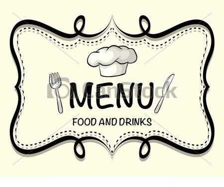

ESPECIALIDADES
COSTILLAS BBQ.Costillas ahumadas en salsa BBQ, acompañado de vegetales y papas.
LOMO.
Lomo fino de res flameado en la mesa con coñac. salsa de vino tinto y camarones.
CAMARÓN AL COCO.
Camarones empanizados con coco rallado, fritos y acompañados con ensalada de la casa.